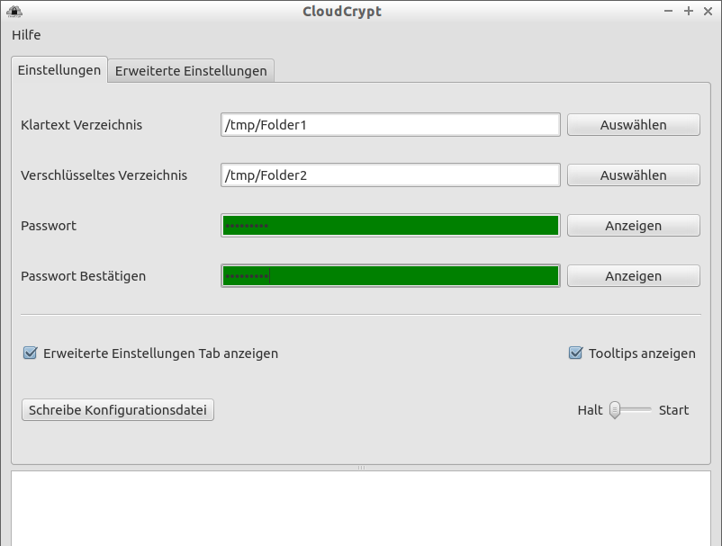
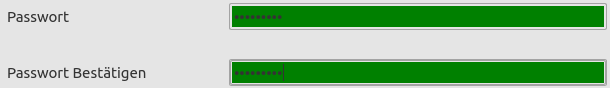
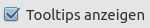
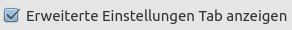
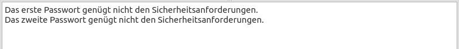

Bedienungsanleitung
Allgemeine Bedienung der Oberfläche
Nachdem sie die Software gestartet haben, sollte sich das folgende Fenster öffnen:
In dem Tab Einstellungen können sie in der ersten Zeile jenes Verzeichnis auswählen, welches ihre Dateien im Klartext enthält. Sie sollten darauf achten, dass sie vorher ein neues Verzeichnis zu diesem Zwecke anlegen und auch nur dieses auswählen, da die Auswahl einer sehr hohen Verzeichnisses in der Verzeichnisstruktur das verschlüsseln von sehr vielen Daten und deren Synchronisation mit der Cloud zur Folge hat, was aber unter Umständen nicht beabsichtigt wird.
In der Zeile darunter kann man das lokale Verzeichnis der Cloud auswählen. Hierhin werden die Dateien verschlüsselt abgelegt und dann hochgeladen. Bitte beachten sie, dass die Dateien natürlich nur hochgeladen werden, wenn sie das korrekte Verzeichnis der Cloud ausgewählt haben.
In den zwei folgenden Zeilen geben sie ihr Passwort ein. Ist das Passwort zu kurz oder stimmen sie nicht überein, so werden diese Felder rot markiert. Ist das Passwort gültig, so ist das Feld grün.
Mit den Buttons jeweils rechts von den Feldern können sie sich das eingegebene Passwort anzeigen lassen. Allerdings wird das Passwort nur angezeigt, solange sie den jeweiligen Button anklicken.
Mittels anklicken der Checkbox  können sie sich zu den meisten Elementen der Oberflächen kurze Erklärungen anzeigen lassen. Diese sind sichtbar, wenn man mit dem Mauszeiger über das betreffende Element fährt und ihn dort einige Sekunden ruhen lässt.
Durch setzen von  wird ein weiterer Tab eingeblendet. In diesem lassen sich viele Einstellungen der Software manuell ändern, löschen und zurücksetzen.
| VORSICHT: Durch das Ändern dieser Einstellungen können sie die Einsatzfähigkeit der Software einschränken oder ihre verschlüsselten Daten eventuell nicht mehr lesen. Es gibt für normale User generell keinen Grund Einstellungen manuell zu editieren. |
Im Tab Einstellungen gibt es einen Button namens . Mit diesem Button können sie die Konfiguration neu schreiben, falls sie diese geändert haben. Ansonsten wird die Datei auch geschrieben, wenn sie die Synchronisation starten oder das Programm normal beenden.
Mit Hilfe des Sliders rechts unten können sie die Synchronisation starten oder wieder anhalten (sofern alle notwendigen Einstellungen getroffen wurden). Beim Starten der Software wird begonnen, ihre Dateien aus dem Ursprungsverzeichnis zu verschlüsseln und diese in den Cloud-Ordner zu kopieren. Anschließend geschiet dieser Vorgang rückwärts, um auch neue Dateien aus der Cloud in den lokalen Ordner zu kopieren. Falls die entsprechende Datei inm jeweils anderen Ordner bereits existiert, werden die Dateien nur dann kopiert, wenn der letzte Bearbeitungszeitpunkt der Datei nach dem der jeweils anderen liegt (also neuer ist). Dieser gesamte Vorgang wird alle 30 Sekunden wiederholt, solange die Software läft und gestartet wurde.
Bitte beachten sie: Der tatsächliche Zeitpunkt des Hochladens ihrer Dateien in die Cloud ist von uns nicht beeinflussbar und hängt in der Regel von verschiedensten Faktoren ab. CloudCrypt kopiert nur die Dateien in das Zielverzeichnis.
Ganz unten im Fenster befindet sich noch ein Bereich, in dem eventuelle Fehler oder sonstige Hinweise angezeigt werden. Diese wird sie beispielsweise darüber informieren, falls ihre beiden Passwörter nicht übereinstimmen.
Wichtige Hinweise
| Wenn sie unverschlüsselte Daten in der Cloud ablegen wollen, so müssen sie dies manuell tun. Sie sollten jedoch hierfür ein eigenes Verzeichnis in der Cloud anlegen, da CloudCrypt unverschlüsselte Daten im Cloud-Ordner grundsätzlich ignoriert. |
| Sie sollten grundsätzlich nicht manuell an den Dateien der Software herummanipulieren. Dies kann im schlimmsten Fall dazu führen, dass die Software nicht mehr funktioniert oder ihre Daten nicht mehr lesbar sind. Verändern sie daher die Dateien der Software nicht und machen sie regelmäße Backups ihrer Daten. |
| Um die Software auf einem anderen Rechner zu nutzen, sollten sie nach dem erstmaligen Benutzen der Software auf ihrem Primärgerät einfach den gesamten Ordner von CloudCrypt auf das zweite Gerät kopieren und dort die Ordnerpfade anpassen. Dadurch ist sichergestellt, dass ihre Daten auch auf dem anderen Gerät lesbar sind und ihr Passwort das gleiche bleibt. |